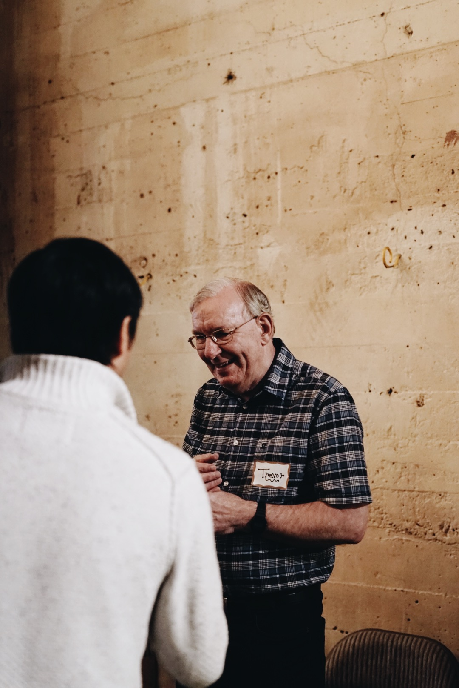
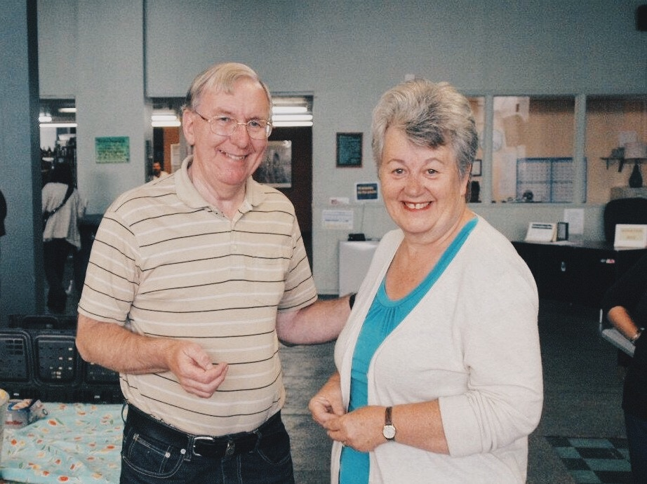

Stories from the street.
News, reflections and stories from life on Ellis Street.
Stories From The Tenderloin: Meredith's Story
I was terrified, I was devastated, I felt inadequate to be leading, and I doubted that God knew what He was doing. Throughout this feeling of not being enough, I went to…
Jul 2, 2019Stories From The Tenderloin: Isaac’s Story
Our focus is not trying to avoid what’s wrong, our focus is now fixed on our Father and because we love Him we don’t want anything else! That Spirit we receive lets us…

Stories From The Tenderloin: Trevor's Story
“On the first night of the course I told you about the aliens and you were very gracious to accept me into the group, but I now know what Christianity is about, and the…
Jun 7, 2019Stories From The Tenderloin: an 11th Floor view
I was astonished to see the outpouring of grace and love your organization gives to those in need. I was touched by the dignity you allow–or so it seemed from the 11th…

Stories From The Tenderloin: Iman's Story
So I did only what I could do - I gave up. My mind was over-burdened, so I stopped caring about the expectations of others. My heart was heavy, so I stopped striving to…

Stories From The Tenderloin: Jan's Story
One day, in particular, a woman walked up to me and asked me if I knew where her daughter and granddaughter were. She explained that they had just become homeless after…
May 8, 2019Stories From The Tenderloin: Christopher's Story
He asked us to read Matthew 24… I don't know what the significance of that passage was for him, but I do know that when he hugged me and kissed my cheek, we'd given him…
Apr 23, 2019Stories From The Tenderloin: Joy's Story
I’ve never been good at facing my fear, especially my fear of vulnerability. Hosting teams has helped me monumentally as I have been challenged by God to step out and…
Apr 9, 2019Stories From The Tenderloin: Kayla's Story
Curtis lives his life pouring into others with anything and everything he has. All he owns in his life is contained on a utility dolly that he brings everywhere he goes.…

Stories From The Tenderloin: Caprice's Story
Now community isn’t a choice. Having a roommate means I literally can’t hide. Eating most of my meals with people makes it harder to hide when I’m having a bad day, or…

Stories From The Tenderloin: Mateo's Story
I didn't care that this man hadn’t showered in several days, or that his clothes were filthy, or that he smelled of alcohol and weed. I sat close to him and let him cry…

Stories From The Tenderloin: Josh's Story
Interruptions are an invitation from God. An invitation to life, ministry, relationship, connection, healing, and the list goes on.
Feb 12, 2019Stories From The Tenderloin: Tim's Story
At the end of the interview, the police officer looked at me with a new sense of understanding. “I am trained to see the problems of the neighborhood. Every night I go…

Stories From The Tenderloin: Tinita's Story
Recently I found myself in a moment of helplessness as a stabbing victim lay right outside our door. I waited for the ambulance trying to calm and reassure the man,…
Jan 15, 2019Stories From The Tenderloin: Kassi's Story
Nadine was wearing socks, leggings, and a crop top on a very cold night. I watched as the officer’s exasperation rose. Nadine became more and more upset and emotional.…
Dec 27, 2018Stories From The Tenderloin: Tom's Story
We live in a climate where, mistakenly, we think the loudest voice wins so we drown out any opposition, listening is viewed as a sign of surrendering to the other side,…
Dec 12, 2018Stories From The Tenderloin: Heiko's Story
The moment I arrived in the Tenderloin I had my answer. The dirty sidewalks, the people living on the streets, the evidence of hopelessness and in the middle of it all -…
Nov 28, 2018Stories From The Tenderloin: Kelsey's Story
The people of the Tenderloin are beautiful. They are the generous ones. They are the ones who immigrated here from hard places. They are the seniors in group homes on…